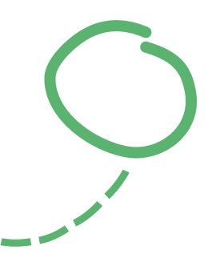

- La maladie d'Alzheimer.
- La maladie de Parkinson.
- Les maladies cérébro-vasculaires.
- Les atteintes fronto-temporales.
- La maladie à Corps de Lewy.
- La maladie de Creutzfeldt-Jakob.

En savoir plus
Dans la maladie, il n'y a pas que la personne atteinte qui souffre.
Un organisme sans but lucratif
Proches aidants depuis 2003
Personnes malades accueillies
Heures de répit données
Le service le plus utilisé!
Insert paragraph here
Moi ou la personne que je soutiens réside à l’Est du boulevard Saint-Laurent.
Oui
Non
Raison d'être du Temps d’une pause depuis 2002, le centre d'activités de jour évolue année après année pour s'adapter au mieux aux besoins des familles. Destiné aux personnes atteintes de maladies cognitives en stade modéré à sévère.
* La cotisation annuelle est de 10$ et est valide du 1er avril au 31 mars de l'an suivant.